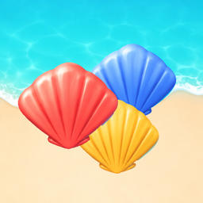

Shellshore Sort

Sort seashells, fill baskets, and uncover six illustrated coasts across 125 puzzle levels.
Shellshore Sort is an offline iPhone game in English. No account, ads, or in-app purchases.
Get Support
Sort seashells, fill baskets, and uncover six illustrated coasts across 125 puzzle levels.
Shellshore Sort is an offline iPhone game in English. No account, ads, or in-app purchases.
Get Support